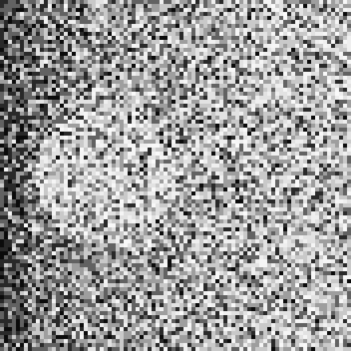

Logan W.
20 (pins.json) commits pinned · GitHub snapshot 2026-10-08 (sources/
Bare beginnings, a shared darkroom, and a pipeline that outgrew the room it was built in.
IThe account
The earliest work here is bare, by Logan's own account: CanonBracketTool, A python based webtool and sdk wrapper for interacting with the Canon SDK to create shot sequences easily and automate shooting. (GitHub snapshot 2026-10-08), and Microscope-Stacker, A tool for stacking images captured on microscopes at various magnifications and exporting a final combined photo retaining detail at all magnifications in one image. (GitHub snapshot 2026-10-08).
atlas-darkroom grew out of the same cloud atlas as the Determinism thread's PrettyCloud: A print engine for the Atlas of Mathematical Forms (atlas-darkroom c1b9b6e README.md:3, private for now). It is private (GitHub snapshot 2026-10-08, private for now) for now. Extracted from it with their history carried: atlas-optical, The glass of the Eidograph, on its own (atlas-optical dbccafe README.md:3, private for now) (private (GitHub snapshot 2026-10-08, private for now) for now); and atlas-film, The medium of the Eidograph (atlas-film be1d674 README.md:3).
atlas-film underlies Quantum-Film, Film stocks whose crystals are laid by quantum circuits (Quantum-Film 3a73823 README.md:3), checked at 18 (Quantum-Film 3a73823 verify/
At its pin, Quantum-Film's README reports: “The shelf's Pauli law ran on three IBM Quantum QPUs (2026-10-05) (Quantum-Film 3a73823 README.md:176)”. Below, one of the devices' prints, with the device, the job and the rule that laid it read from the records at the pin.

The results document's one-paragraph summary: “All three devices carry the law's two quantum signatures, well clear of the classical twin: 4.3% to 5.4% of their five-crystal shots on forbidden layouts against the twin's 31.1%, and coherences of +0.27 to +0.34 where a classical mixture gives 0. And all three fall short of what their own noise models predicted. (Quantum-Film 3a73823 docs/
This device is first in the order the pre-registration fixed: “The devices run in ESP order: ibm_kingston, then ibm_marrakesh, then ibm_fez (Quantum-Film 3a73823 docs/
StoryDocs, a book-and-paper pipeline built from Markdown manifests (StoryDocs 8548802 README.md:3, private for now: “Markdown manifests”), was taken out of atlas-darkroom (StoryDocs 8548802 README.md:8, private for now) — the book side is the pipeline the Eidograph volumes were made with; the paper side, new, is a hybrid of a research paper and that book's own idiom. It is private (GitHub snapshot 2026-10-08, private for now) for now, born 2026-09-20 (StoryDocs 8548802 git log, private for now). It has since touched many of the map's other projects, which the arrows out of it show, derived from its projects/ directories rather than typed by hand.
IIThis thread’s part of the map
The file behind each arrow, and behind each position, in this thread
- PrettyCloud grew into atlas-darkroom: A print engine for the Atlas of Mathematical Forms (atlas-darkroom c1b9b6e README.md:3, private for now)
- PrettyCloud grew into atlas-engine: Sixty-eight plates in PrettyCloud (atlas-engine 867c57a README.md:8)
- atlas-engine grew into cft-fp256: The workload this tile exists to serve is atlas-engine (cft-fp256 ab51655 README.md:440)
- atlas-engine verifies cft-fp256: A GPU agrees, bit for bit, on a real workload (cft-fp256 ab51655 README.md:251)
- atlas-engine underlies atlas-darkroom: presentation from PrettyCloud, shape from atlas-engine (atlas-darkroom c1b9b6e README.md:282, private for now)
- atlas-darkroom spun out atlas-optical: Extracted whole from atlas-darkroom on 2026-08-28 (atlas-optical dbccafe README.md:5, private for now)
- atlas-darkroom spun out atlas-film: Born 2026-08-28 by extraction from the darkroom's develop monolith (atlas-film be1d674 README.md:135)
- cft-fp256 underlies cft-rebound: REBOUND's IAS15 integrator with its arithmetic routed through libcft (cft-rebound 039e3c3 README.md:3)
- cft-fp256 underlies Quantum-Film: path = vendor/cft-fp256 (Quantum-Film 3a73823 .gitmodules:2)
- atlas-film underlies Quantum-Film: path = vendor/atlas-film (Quantum-Film 3a73823 .gitmodules:5)
- cft-fp256 hosts a port of atlas-film: P2 moves atlas-film (ParcelRound f42242e CASE-STUDY-4.md:28)
- cft-rebound was distilled into ParcelRound: lifted into a standalone repository (cft-rebound 039e3c3 docs/
PARCEL-ROUNDS.md:13) - cft-fp256 was distilled into HonestFramework: §1 bit-identity authority, §2 refusal, §3 the gates, §4 single-sourcing, §6 artifact manifests (HonestFramework 65447fd CASE-STUDY.md:18)
- ParcelRound underlies HonestHarness: A harness for running ParcelRound and HonestFramework on open-weight models (HonestHarness b310f82 README.md:3)
- HonestFramework underlies HonestHarness: A harness for running ParcelRound and HonestFramework on open-weight models (HonestHarness b310f82 README.md:3)
- cft-fp256 was distilled into HonestHarness: the requirements, H1 to H17, derived from the record of cft-fp256's rounds (HonestHarness b310f82 README.md:15)
- Mercenaries2 grew into Merc2-Mods-Exp: For the mods developed during this phase of the project, visit [Merc2-Mods-Exp] (Mercenaries2 e51dcbe README.md:5)
- atlas-darkroom spun out StoryDocs: taken out of atlas-darkroom (StoryDocs 8548802 README.md:8, private for now)
- StoryDocs documents atlas-engine: projects/atlas-engine (StoryDocs 8548802, private for now)
- StoryDocs documents atlas-film: projects/atlas-film (StoryDocs 8548802, private for now)
- StoryDocs documents atlas-optical: projects/atlas-optical (StoryDocs 8548802, private for now)
- StoryDocs documents cft-fp256: projects/cft-fp256 (StoryDocs 8548802, private for now)
- StoryDocs documents HonestFramework: HonestFramework and ParcelRound (StoryDocs 8548802 projects/
method/ README.md:3, private for now) - StoryDocs documents ParcelRound: HonestFramework and ParcelRound (StoryDocs 8548802 projects/
method/ README.md:3, private for now) - StoryDocs documents PrettyCloud: projects/prettycloud (StoryDocs 8548802, private for now)
- StoryDocs documents Quantum-Film: projects/quantum-film (StoryDocs 8548802, private for now)
Positions, earliest first:
- CanonBracketTool: 2025-11-04 (GitHub snapshot 2026-10-08)
- Microscope-Stacker: 2025-11-06 (GitHub snapshot 2026-10-08)
- Mercenaries2: 2026-06-27 (Mercenaries2 e51dcbe git log)
- Merc2-Mods-Exp: 2026-06-29 (Merc2-Mods-Exp 0ec1db2 git log)
- PrettyCloud: 2026-07-15 (PrettyCloud 5161daa git log)
- atlas-darkroom: 2026-07-27 (atlas-darkroom c1b9b6e git log, private for now)
- atlas-engine: 2026-08-22 (atlas-engine 867c57a git log)
- atlas-film: 2026-08-28 (atlas-film be1d674 README.md:135)
- atlas-optical: 2026-08-28 (atlas-optical dbccafe README.md:6, private for now)
- cft-fp256: 2026-08-28 (cft-fp256 ab51655 git log)
- cft-rebound: 2026-09-09 (cft-rebound 039e3c3 git log)
- ParcelRound: 2026-09-11 (ParcelRound f42242e git log)
- HonestFramework: 2026-09-12 (HonestFramework 65447fd git log)
- binary-sites: 2026-09-14 (binary-sites dacdcb8 git log, private for now)
- StoryDocs: 2026-09-20 (StoryDocs 8548802 git log, private for now)
- nextpnr-xilinx: 2026-09-23 (GitHub snapshot 2026-10-08: created (a fork - dated by GitHub's record of when the fork itself was made, in UTC, never by a commit, since its earliest commit belongs to the project it forked))
- Quantum-Film: 2026-09-25 (Quantum-Film 3a73823 git log)
- HonestHarness: 2026-10-03 (HonestHarness b310f82 git log)
Families:
- 22 (GitHub snapshot 2026-10-08) mercs2 repositories, created 06-29 to 07-25 (GitHub snapshot 2026-10-08)
The rest of what the drawing marks:
- the line marked "snapshot": 2026-10-08 (sources/
github-2026-10-08-1345.json) - atlas-darkroom: private (GitHub snapshot 2026-10-08, private for now)
- atlas-optical: private (GitHub snapshot 2026-10-08, private for now)
- binary-sites: private (GitHub snapshot 2026-10-08, private for now)
- StoryDocs: private (GitHub snapshot 2026-10-08, private for now)
- Mercenaries2: server refesl.live (Mercenaries2 e51dcbe README.md:145)
IIIIts door
bring a process — a development recipe, a claimed printing method, or a historical process's parameters — and see it reproduced to the same bits, or shown where it doesn't. (stated by Logan, 2026-09-29) Propose a thread.